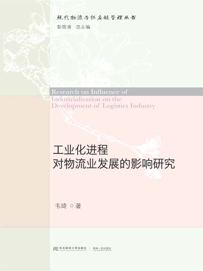

1997-2001，兰州大学经济管理学院，获经济学学士学位，同时获法律学辅修学位
2002-2005，中山大学岭南学院,获经济学硕士学位
2007-2010，中山大学岭南学院，获管理学博士学位
主讲课程供应链管理，采购管理，物流管理，港口物流管理
研究方向港口物流，物流管理，供应链管理
代表性科研成果1、主持课题
1. 阳明明.产业转移路径与交通枢纽物流量长期增长.中国物流学术前沿报告.2012.11
2. 阳明明.一种预测交通枢纽物流量的新方法. 中国物流学术前沿报告.2011.11
3. 阳明明.珠三角产业转移与广州港口经济发展新一轮契机，现代管理科学，2010.3
4. 阳明明.核心企业激励节点企业信息化的方式及其比较，物流科技，2009.10
5. 阳明明.香港的港口服务型供应链，中国物流与采购，2006.5
6. 阳明明.物流成为“农改超”关键-对深圳市“农改超”调查的思考.中国物流与采购，2004.10
7. 阳明明.CEPA环境下香港物流企业投资内地的战略选择，物流科技，2004.6
8. 陈功玉，阳明明.论中国企业的供应链管理（第二作者），中山大学学报（社科版），2003.11
1. 阳明明.产业转移路径与交通枢纽物流量长期增长.中国物流学术前沿报告.2012.11
2. 阳明明.一种预测交通枢纽物流量的新方法. 中国物流学术前沿报告.2011.11
3. 阳明明.珠三角产业转移与广州港口经济发展新一轮契机，现代管理科学，2010.3
4. 阳明明.核心企业激励节点企业信息化的方式及其比较，物流科技，2009.10
5. 阳明明.香港的港口服务型供应链，中国物流与采购，2006.5
6. 阳明明.物流成为“农改超”关键-对深圳市“农改超”调查的思考.中国物流与采购，2004.10
7. 阳明明.CEPA环境下香港物流企业投资内地的战略选择，物流科技，2004.6
8. 陈功玉，阳明明.论中国企业的供应链管理（第二作者），中山大学学报（社科版），2003.11
获奖情况
2011年，论文“一种预测交通枢纽物流量的新方法”获“中国物流学术年会论文二等奖”；
2012年，论文“产业转移路径与交通枢纽物流量长期增长”获“中国物流学术年会论文一等奖”；
电子邮件：
sunnyyang200209@yahoo.com.cn
最新著作： 2012年，论文“产业转移路径与交通枢纽物流量长期增长”获“中国物流学术年会论文一等奖”；
电子邮件：
sunnyyang200209@yahoo.com.cn

丛 书 名：现代物流与供应链管理丛书 总主编：彭雷清
作 者：阳明明 定 价：￥32 译 者：
版 次：1-1 IS B N：978-7-5654-2279-9 开 本：16
出版时间：2016-04-15 页 码： 144
出版社：东北财经大学出版社
作 者：阳明明 定 价：￥32 译 者：
版 次：1-1 IS B N：978-7-5654-2279-9 开 本：16
出版时间：2016-04-15 页 码： 144
出版社：东北财经大学出版社